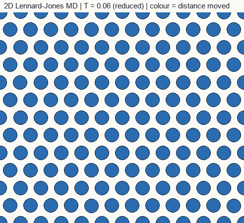

Curriculum/Computational methodsCMS 502
Molecular dynamics
Molecular dynamics (MD) is the closest thing to a movie of matter: place atoms in a box, compute the force on each from an interatomic potential, move them a tiny step, and repeat a few million times. Averages over the trajectory give thermodynamic and transport properties, and the pictures show mechanisms.
- Reading time
- about 11 min
- Builds on
- CMS 401: Introduction
MSE 201: Crystals and cells
PHYS 301: Statistical mechanics
COMP 201: Numerical methods - Leads to
- CMS 507: Machine learning
- Level
- Graduate: simulation methods
- Write the velocity-Verlet algorithm and choose a sensible time step.
- Compare the main classes of interatomic potential and say how to validate one.
- Describe thermostats and barostats and which ensembles they produce.
- Plan a simulation from construction to analysis, and judge what MD can and cannot reach.
1. The idea#
Classical MD treats atoms as point masses that obey Newton’s second law under forces derived from a potential energy function U of all the positions:
mi d²ri/dt² = Fi = −∇i U(r1, …, rN)There are three ingredients: a potential that supplies the forces, an integrator that advances the positions and velocities, and the conditions (cell, boundaries, temperature, pressure). Starting from initial positions and random velocities, the trajectory samples the ensemble defined by those conditions (see statistical mechanics). The following simulation shows a two-dimensional crystal of Lennard-Jones atoms being heated: atoms start vibrating about lattice sites, then the lattice loses order and atoms begin to wander.

2. Integrating the equations#
A good integrator should be cheap (one force evaluation per step, because forces dominate the cost), time-reversible and symplectic, so that the energy does not drift over long runs. The standard choice is the velocity-Verlet algorithm. With time step Δt:
v(t + Δt/2) = v(t) + F(t) Δt / 2mr(t + Δt) = r(t) + v(t + Δt/2) Δt
compute F(t + Δt) from the new positions
v(t + Δt) = v(t + Δt/2) + F(t + Δt) Δt / 2m
Its error per step is of order Δt3, but its structure preserves a nearby “shadow” energy, so the total energy fluctuates slightly without drifting if Δt is small enough. Trajectories themselves are chaotic: two runs that start a hair apart diverge exponentially, so individual trajectories are not reproducible over long times, but statistical averages are.
Choosing the time step
The step must resolve the fastest motion in the system, roughly one-tenth to one-twentieth of the shortest vibrational period. Metals with embedded-atom potentials commonly use 1 to 5 fs; systems with light atoms (hydrogen) or stiff bonds need 0.5 fs or less. The practical test is to run in the NVE ensemble and check that the total energy is conserved: a steady drift or large fluctuations mean the step is too long, the cutoff is too abrupt or the potential is not smooth. Each step is 10−15 s, so a nanosecond needs 106 steps and a microsecond 109.
3. Interatomic potentials#
The potential is a model of the Born–Oppenheimer energy surface (see DFT). The faster the potential, the simpler its functional form and the more physics it leaves out. The simplest, the Lennard-Jones pair potential, is a good model for noble gases and a useful teaching and testing tool:
U(r) = 4ε [ (σ/r)12 − (σ/r)6 ], minimum at r = 21/6σ, depth εThis interactive explorer needs JavaScript to run.
| Class | Idea | Used for | Cautions |
|---|---|---|---|
| Pair (Lennard-Jones, Morse, Buckingham) | Energy is a sum over pairs | Noble gases, simple ionic and model systems | Cannot reproduce metals’ elastic anisotropy (forces C12 = C44, the Cauchy relation) |
| Embedded atom (EAM) and MEAM | E = Σi Fi(ρi) + ½Σij φ(rij), where ρi is a sum of neighbour contributions; MEAM adds angular dependence | fcc, bcc and hcp metals and alloys; defects, surfaces, plasticity | Fitted to bulk properties; check stacking-fault energy, surface energy, melting point |
| Bond-order and covalent (Tersoff, Stillinger–Weber, AIREBO) | Bond strength depends on local coordination | Si, Ge, C, SiC, BN | Limited transferability between phases |
| Reactive (ReaxFF, COMB) | Bond order determined dynamically; charges equilibrated | Oxidation, combustion, catalysis | Slow; each parameter set is for a defined chemistry |
| Charged systems (Coulomb + short-range) | Long-range electrostatics (Ewald, PPPM) plus repulsion | Oxides, salts, ceramics | Long-range sums are expensive; need charge neutrality |
| Machine-learned (GAP, MTP, ACE, SNAP, neural-network) | Flexible functions of local atomic environments, fitted to DFT energies, forces and stresses | Complex chemistry at near-DFT accuracy | Valid only inside the training data; 10 to 1000 times slower than EAM |
| Universal / foundation models (for example M3GNet, CHGNet, MACE-MP) | Machine-learned potentials trained on very large DFT databases across the periodic table | Quick screening, initial exploration | Systematic softening of energy surfaces; validate before relying |
Validating a potential
A potential is a model that must pass tests for the property you want. A minimal checklist, compared with experiment or DFT:
- lattice parameter and cohesive energy of the relevant structures;
- elastic constants and phonon spectrum;
- point-defect formation energies and migration barriers;
- surface energies, stacking-fault energies, grain-boundary energies;
- melting temperature, thermal expansion;
- relative energies of competing phases (is the ground state the right one?).
Repositories such as the NIST interatomic potentials repository and OpenKIM provide published potentials with test results. Using a potential outside the conditions for which it was fitted is the most common source of misleading MD results.
4. Neighbour lists and cost#
Short-range potentials are truncated at a cutoff rc, so each atom interacts with the neighbours within it. Checking every pair would scale as N2. Instead a neighbour list (Verlet list) records atoms within rc plus a skin distance and is rebuilt only every few steps, using spatial cell lists to find candidates quickly; the cost per step then scales as N. Large runs divide space into domains handled by different processors (domain decomposition, with MPI) and exchange atoms near the domain edges, so billions of atoms are feasible on supercomputers. Long-range Coulomb forces use Ewald summation or particle-mesh methods (PPPM, PME), scaling as N log N.
5. Controlling temperature and pressure#
With no control the simulation conserves energy (NVE). To model an experiment at constant temperature or pressure, a thermostat or barostat is added. The algorithms differ in whether they produce the correct ensemble.
| Method | Controls | Correct ensemble? | Note |
|---|---|---|---|
| Velocity rescaling | T | No | Simple; used for quick equilibration only (the animation above uses it to ramp temperature) |
| Berendsen | T, p | No (suppresses fluctuations) | Robust and fast to equilibrate; not for production runs that need fluctuations |
| Nosé–Hoover (chains) | T | Yes, canonical | Standard choice; deterministic; the damping time sets coupling |
| Stochastic velocity rescaling (CSVR / Bussi) | T | Yes, canonical | Efficient equilibration and correct fluctuations |
| Langevin | T | Yes, canonical | Adds friction and random forces; perturbs dynamics, so not for diffusion |
| Parrinello–Rahman, Martyna–Tobias–Klein | p (cell shape and size) | Yes, isothermal–isobaric | Allows shear and shape change, needed for solid–solid transformations |
Thermostat strength matters: strong coupling distorts the natural dynamics, so for transport coefficients the system is equilibrated with a thermostat and then run in NVE.
6. Workflow#
- Build the structure and cell (see crystal structures and periodic cells), with box edges at least twice the cutoff.
- Minimise the energy (conjugate gradient or FIRE) to remove overlaps and high forces before dynamics begin.
- Assign velocities from the Maxwell–Boltzmann distribution at the target temperature, remove net momentum.
- Equilibrate, usually NVT then NPT, until energy, temperature, pressure and density stop drifting.
- Produce the data run in the chosen ensemble, saving configurations and properties at intervals longer than a few vibrational periods.
- Analyse and estimate uncertainties from independent runs or block averages.
7. Analysis#
- Structure. Radial distribution function g(r) and coordination numbers; common neighbour analysis or polyhedral template matching labels each atom as fcc, bcc, hcp or other, revealing stacking faults, twins and grain boundaries; the centrosymmetry parameter highlights defects.
- Defects. The dislocation extraction algorithm (DXA in OVITO) finds dislocation lines and Burgers vectors; Wigner–Seitz analysis counts vacancies and interstitials after radiation damage.
- Transport. Diffusion from the slope of the mean-squared displacement, MSD = 6Dt in three dimensions, using unwrapped coordinates (details in diffusion and kinetics); viscosity and thermal conductivity from Green–Kubo integrals or non-equilibrium set-ups.
- Mechanics. The stress tensor from the virial; stress–strain curves from imposed deformation; elastic constants from small strains or fluctuations.
- Thermodynamics. Melting temperature by two-phase coexistence (solid and liquid in one box: the interface advances toward melting or freezing depending on temperature); free energies by thermodynamic integration.
8. Applications in materials#
MD is strongest where atomic mechanisms control behaviour on nanosecond time scales: tensile and compression tests of nanowires and nanopillars; nanoindentation; dislocation nucleation and motion at interfaces; grain-boundary sliding and migration; dislocation–precipitate and dislocation–solute interaction; crack propagation and brittle–ductile behaviour at a crack tip; shock compression; radiation-damage cascades; melting, solidification and nucleation of simple systems; diffusion in liquids and fast-diffusion solids; thermal conductivity of nanostructures.
9. Limits#
- Time scale. Nanoseconds to microseconds. Processes governed by rare events with barriers much above kBT are not reached directly.
- Strain rate. Deformation is typically driven at 107 to 1010 s−1, some ten orders of magnitude faster than a tensile test, and flow stresses are correspondingly high. Rate effects must be considered before comparing with experiment.
- Length scale. Millions to billions of atoms span tens to hundreds of nanometres, far below a grain in an engineering alloy, so surfaces and boundary effects are enormous.
- Potential accuracy. The result cannot be better than the energy surface supplied. Electronic effects (magnetism, charge transfer) are absent unless built in.
- Classical nuclei. Quantum effects (zero-point energy, tunnelling of hydrogen) are neglected, and classical heat capacity is wrong at low temperature.
10. A minimal input#
LAMMPS is the most widely used open-source MD code. This input equilibrates a 4000-atom copper crystal at 300 K and zero pressure with an EAM potential (the potential file ships with the program):
units metal
boundary p p p
lattice fcc 3.615
region box block 0 10 0 10 0 10
create_box 1 box
create_atoms 1 box
mass 1 63.546
pair_style eam
pair_coeff * * Cu_u3.eam
velocity all create 300.0 12345 mom yes rot no
fix 1 all npt temp 300.0 300.0 0.1 iso 0.0 0.0 1.0
timestep 0.002 # 2 fs in metal units (time in ps)
thermo 100
run 10000In LAMMPS “metal” units, distance is in Å, energy in eV, time in ps and pressure in bar. The numbers 0.1 and 1.0 on the npt line are the temperature and pressure damping times in ps.
- MD integrates Newton's equations with velocity-Verlet. Use a time step of about a tenth to a twentieth of the shortest vibrational period and check energy conservation in NVE.
- The potential defines the accuracy, so validate it on the property you need.
- Use canonical thermostats and proper barostats (Nose-Hoover, stochastic velocity rescaling, Parrinello-Rahman) for production runs.
- The workflow is build, minimise, equilibrate, produce and analyse, with error bars from independent runs.
- Limits: nanoseconds to microseconds, very high strain rates, classical nuclei and no electrons.
11. Check your understanding#
A NVE run shows the total energy rising steadily. List three things to check.
(1) The time step may be too large for the fastest vibration. (2) The potential or its cutoff may be discontinuous, so the force jumps at rc (use a smoothly truncated or shifted form). (3) A neighbour-list skin that is too small can cause missed interactions when atoms move; also check for overlapping atoms in the starting structure.
Why can one not use Berendsen coupling for a calculation of heat capacity from energy fluctuations?
Berendsen coupling damps the energy fluctuations and does not generate the canonical distribution. The fluctuation formula for CV relies on the true canonical variance of the energy, so a canonical thermostat (Nosé–Hoover chains or stochastic velocity rescaling) is needed.
A simulated tensile test gives a yield stress ten times the experimental value. Is the potential necessarily wrong?
No. Strain rates in MD are far higher than in experiments, and nanoscale samples have few pre-existing dislocation sources, so high stresses are expected. Compare like with like (rate, size, defect content) and check whether the potential reproduces stacking-fault and surface energies, which control the mechanism.
12. References and further reading#
- Allen, M. P. and Tildesley, D. J., Computer Simulation of Liquids, Oxford University Press.
- Frenkel, D. and Smit, B., Understanding Molecular Simulation, Academic Press.
- Verlet, L., Computer “experiments” on classical fluids. I., Phys. Rev. 159, 98 (1967).
- Daw, M. S. and Baskes, M. I., Embedded-atom method, Phys. Rev. B 29, 6443 (1984).
- Hoover, W. G., Canonical dynamics: equilibrium phase-space distributions, Phys. Rev. A 31, 1695 (1985).
- Parrinello, M. and Rahman, A., Polymorphic transitions in single crystals, J. Appl. Phys. 52, 7182 (1981).
- Bussi, G., Donadio, D. and Parrinello, M., Canonical sampling through velocity rescaling, J. Chem. Phys. 126, 014101 (2007).
- Behler, J. and Parrinello, M., Generalized neural-network representation of high-dimensional potential-energy surfaces, Phys. Rev. Lett. 98, 146401 (2007).
- Bartók, A. P. et al., Gaussian approximation potentials, Phys. Rev. Lett. 104, 136403 (2010).
- Thompson, A. P. et al., LAMMPS, Comput. Phys. Commun. 271, 108171 (2022).
- Stukowski, A., Visualization and analysis of atomistic simulation data with OVITO, Modelling Simul. Mater. Sci. Eng. 18, 015012 (2010).